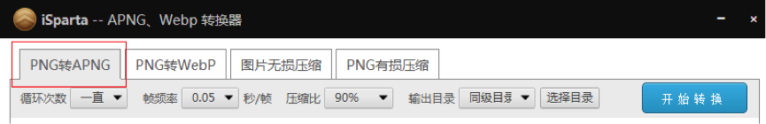
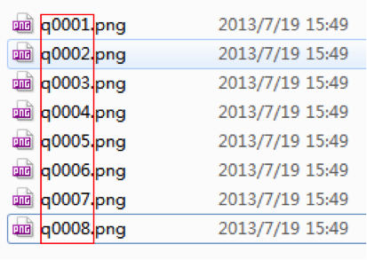
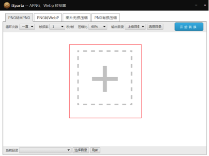
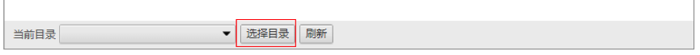
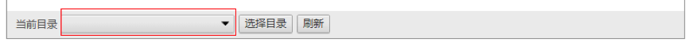
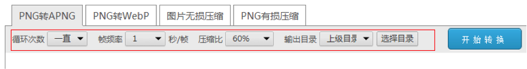
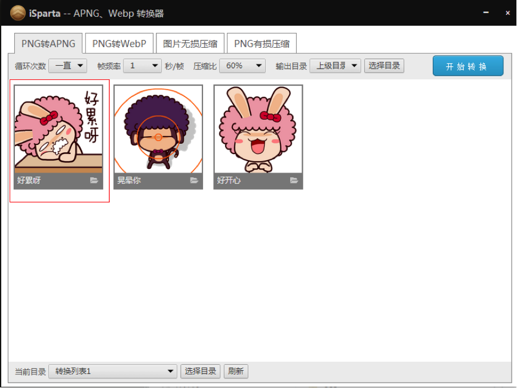

一、下载iSparta
目前iSparta支持windows和mac两个系统版本，请进入首页下载。
二、导入文件
-
1、打开下载的工具iSparta，选择“PNG转APNG”页卡。

-
2、文件序列化：将需转换的每一帧PNG（每一帧的图片尺寸必须相同）的文件名按照序列来命名（如xxx01.png、xxx02.png、xxx03.png…xxx11.png）

-
3、导入文件：将序列化好的文件（或者包含序列化好的文件的文件夹，这样可以达到批量处理的效果）全选拖动到“+”区域，如下图：

或者还可以选择底部的“选择目录”按钮来打开包含序列化文件的文件夹

或者还可以选择底部的“当前目录”下拉框来打开历史转换目录（初始为空）

三、 参数配置
可以配置输出的APNG的循环次数（默认一直循环）、帧频率（默认1秒/帧）、压缩比（默认60%），输出目录（默认上级目录）。（这些配置项更改后均会保存起来，下次打开应用程序时会恢复上一次的设置）

其中，压缩比越高输出的质量越好，如果对输出的图片质量不满意，可以尝试修改压缩比来提高输出的图片质量。
输出目录是指转换后的apng图片的目录，有两个默认值，上级目录（即每一帧PNG所在目录的上级目录）和同级目录（即每一帧PNG所在目录）。当然，还可以通过“选择目录”按钮来选择特定的输出目录。
如果某些帧之间需要延时，可以将需要延时的帧图片复制几张（按延时长短决定复制数量），然后再重新按序列命名图片。
四、 输出
可以点选图片预览框来控制该图片是否输出（如下图所示），默认所有图片输出。点击“开始转换按钮即可将图片输出到相应目录（转换过程会花费一定的时间，请耐心等待）。

五、 查看
在相应的输出目录找到输出的APNG图片，使用firefox浏览器打开该图片即可看到图片动态效果。
或者使用浏览器（chrome）打开APNG在线查看器，将生成的apng图片拖入即可查看。